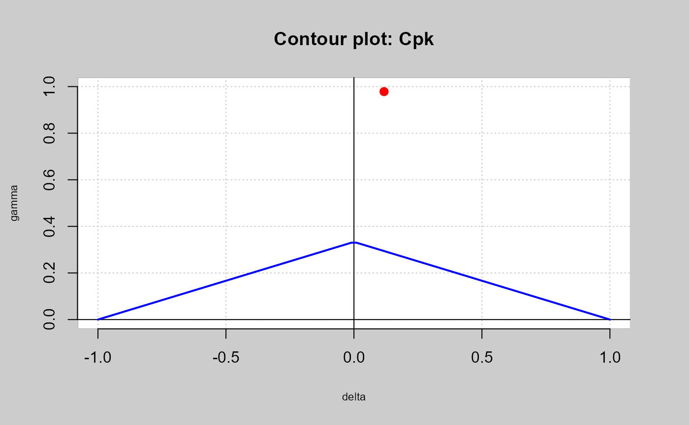

Calculates \(Cp\), \(Cpm\) using the formulation described by Kerstin Vannman(1995).
qcs.cp( object, parameters = c(u = 0, v = 0), limits = c(lsl = -3, usl = 3), target = NULL, mu = 0, std.dev = 1, nsigmas = 3, k = 1, contour = TRUE, ylim = NULL, ... )
Arguments
| object | qcs object of type |
|---|---|
| parameters | A vector specifying the |
| limits | A vector specifying the lower and upper specification limits. |
| target | A value specifying the target of the process.
If is |
| mu | A value specifying the mean of data. |
| std.dev | A value specifying the within-group standard deviation. |
| nsigmas | A numeric value specifying the number of sigmas to use. |
| k | A numeric value. If the capacity index exceeds the |
| contour | Logical value indicating whether contour graph should be plotted. |
| ylim | The y limits of the plot. |
| ... | Arguments to be passed to or from methods. |
References
Montgomery, D.C. (1991) Introduction to Statistical Quality Control, 2nd
ed, New York, John Wiley & Sons.
Vannman, K (1995) A Unified Approach to Capability Indices. Statitica Sinica,5,805-820.
Examples
mu <-xbar$center std.dev <-xbar$std.dev LSL=73.99; USL=74.01 qcs.cp(parameters = c(0,0),limits = c(LSL,USL), mu = mu,std.dev = std.dev,ylim=c(0,1))#> Cp delta gamma #> 0.3407 0.1176 0.9785#calculating all the indices qcs.cp(object = xbar,parameters = c(0,0), limits = c(LSL,USL),ylim=c(0,1))#> Cp delta gamma #> 0.3407 0.1176 0.9785#> Cpk delta gamma #> 0.3006 0.1176 0.9785#> Cpm delta gamma #> 0.3382 0.1176 0.9785#> Cpmk delta gamma #> 0.2984 0.1176 0.9785